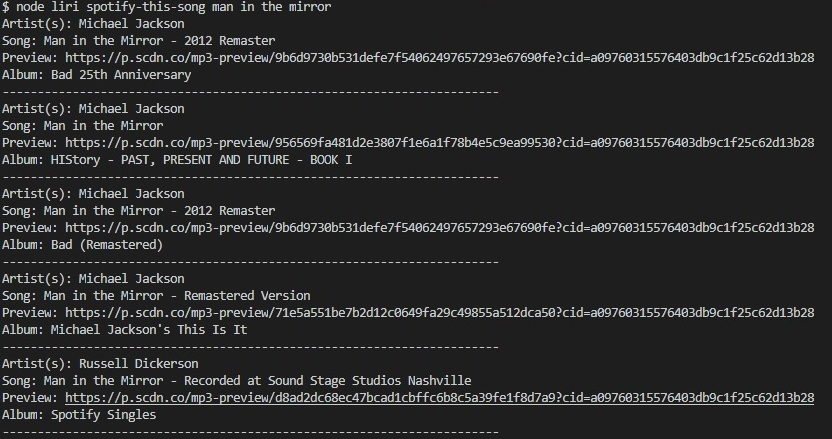
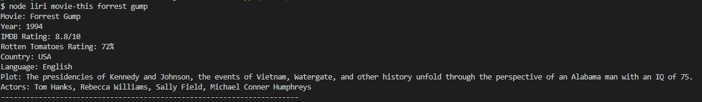
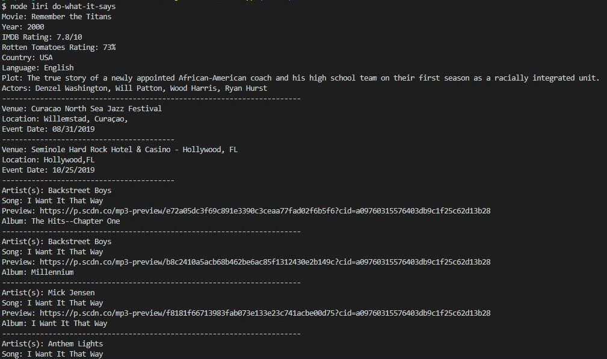

LIRI Bot Demo
Liri will search Spotify for songs, Bands in Town for concerts, and OMDB for movies. It also reads input from a text file called random.txt and executes all of instruction in the file. For every search, the results are logged into a file called log.txt.
How It Works
Liri takes in one of the following commands:
node liri concert-this <artist name>
node liri concert-this bruno mars

node liri spotify-this-song <song>
node liri spotify-this-song man in the mirror

node liri movie-this <movie title>
node liri movie-this forrest gump

node liri do-what-it-says
node liri do-what-it-says
